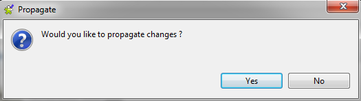

|
Component family |
Databases/Sybase IQ | |
|
Function |
Executes the Insert action on the data provided. | |
|
Purpose |
As a dedicated component, it allows gains in performance during Insert operations to a Sybase IQ database. | |
|
Basic settings |
Property type |
Either Built-in or Repository. If you are using Talend Open Studio for Big Data, only the Built-in mode is available. |
|
|
|
Built-in: No property data stored centrally. |
|
|
|
Repository: Select the repository file in which the properties are stored. The fields that follow are completed automatically using the data retrieved. |
|
|
DB Version |
The available Sybase versions are: - Sybase IQ 12; - Sybase IQ 15.
Warning
NoteThe Sybase IQ 15 version is connected to via ODBC while the Sybase IQ 12 version is via JDBC, so the fields to be completed on the Basic settings view vary slightly between the alternative versions. |
|
|
Use an existing connection WarningSybase IQ 12 only. |
Select this check box and in the Component List click the relevant connection component to reuse the connection details you already defined. NoteWhen a Job contains the parent Job and the child Job, if you need to share an existing connection between the two levels, for example, to share the connection created by the parent Job with the child Job, you have to:
For an example about how to share a DB connection across Job levels,see Talend Open Studio User Guide. |
|
|
Host WarningSybase IQ 12 only. |
Database server IP address. |
|
|
Port WarningSybase IQ 12 only. |
Listening port number of DB server. |
|
|
Data Source WarningSybase IQ 15 only. |
Select the type of the data source to be used and complete the corresponding DSN information in the field alongside. The available types are: - DSN; - FILEDSN. When the FILEDSN type is used, a three-dot button appears next to the Data Source field to allow you to browse to the data source file of interest. |
|
|
Database |
Name of the database |
|
|
Username and Password |
DB user authentication data. |
|
|
Table |
Name of the table to be written. Note that only one table can be written at a time and that the table must exist for the insert operation to succeed. |
|
|
Action on table |
On the table defined, you can perform one of the following operations: None: No operation is carried out. Drop and create a table: The table is removed and created again. Create a table: The table does not exist and gets created. Create a table if not exists: The table is created if it does not exist. Clear a table: The table content is deleted. |
|
|
File Name |
Name of the file to be generated and loaded. |
|
|
Append the file |
select this check box to add the new rows at the end of the records. |
|
|
Schema and Edit Schema |
A schema is a row description, i.e., it defines the number of fields to be processed and passed on to the next component. The schema is either Built-in or stored remotely in the Repository. If you are using Talend Open Studio for Big Data, only the Built-in mode is available. |
|
|
|
Built-in: You create and store the schema locally for this component only. Related topic: see Talend Open Studio User Guide. |
|
|
|
Repository: You have already created and stored the schema in the Repository, hence can be reused. Related topic: see Talend Open Studio User Guide. |
|
Advanced settings |
Additional JDBC Parameters |
Specify additional connection properties in the existing DB connection, to allow specific character set support. |
|
|
Fields terminated by |
Character, string or regular expression to separate fields. WarningAs a combination of tSybaseOutputBulk and tSybaseIQBulkExec, this component does not allow the use of Sybase-oriented row/field separators, such as \x09. To achieve the desired effect (for example, displaying fields in the tabular form), you need to use tSybaseOutputBulk and tSybaseIQBulkExec together to replace tSybaseIQOutputBulkExec, with \t used in the former component and \x09 used in the latter. |
|
|
Lines terminated by |
Character or sequence of characters used to separate lines. |
|
|
Use enclose quotes |
Select this check box to use data enclosure characters. |
|
|
Include Head |
Select this heck box to include the column header. |
|
|
Encoding |
Select the encoding type from the list or select Custom and define it manually. This field is compulsory for DB data handling. |
|
|
tStatCatcher Statistics |
Select this check box to collect log data at the component level. |
|
Dynamic settings |
Click the [+] button to add a row in the table and fill the Code field with a context variable to choose your database connection dynamically from multiple connections planned in your Job. This feature is useful when you need to access database tables having the same data structure but in different databases, especially when you are working in an environment where you cannot change your Job settings, for example, when your Job has to be deployed and executed independent of Talend Studio. The Dynamic settings table is available only when the Use an existing connection check box is selected in the Basic settings view. When a dynamic parameter is defined, the Component List box in the Basic settings view becomes unusable. For more information on Dynamic settings and context variables, see Talend Open Studio User Guide. | |
|
Usage |
This component is mainly used when no particular transformation is required on the data to be loaded onto the database. | |
|
Limitation |
The jodbc.jar also needs to be installed separately in the Modules view of the Integration perspective in your studio. For details, see How to install external modules in Talend Open Studio User Guide. WarningFor Sybase IQ 12, the database client/server should be installed on the same machine where the Studio is installed or where the Job using tSybaseIQOutputBulkExec is deployed, so that the component functions properly. For Sybase IQ 15, it is allowed that only the database client is installed on the same machine where the Studio is installed or where the Job using tSybaseIQOutputBulkExec is deployed, so that the component functions properly. However, this means certain setup on the Sybase IQ 15 server. For details, see Sybase IQ client-side load support enhancements. | |
This scenario saves data from a tRowGenerator to a file and then bulk-loads the data to a Sybase IQ 12 database.
Drop tRowGenerator and tSybaseIQOutputBulkExec onto the workspace.
Link tRowGenerator to tSybaseIQOutputBulkExec using a Row > Main connection.

Double-click tRowGenerator to open its schema editor.

Click the [+] button to add two columns, namely id and name.
Select the type for id and name, respectively int and String.
Set the length for id and name, respectively 4 and 30.
Select the function for id and name, respectively
Numeric.sequenceandTalendDataGenerator.getFirstName.Click Ok to close the editor and click Yes on the pop-up below to propagate changes:
Double-click tSybaseIQOutputBulkExec to open its Basic settings view.

In the Host and Port fields, enter the connection details.
In the Database field, enter the database name.
In the Username and Password fields, enter the authentication credentials.
In the Table field, enter the table name.
In the Action on table list, select Create table if not exists.
In the Filename field, enter the full path of the file to hold the data.


For use cases in relation with tSybaseIQOutputBulkExec, see the following scenarios: